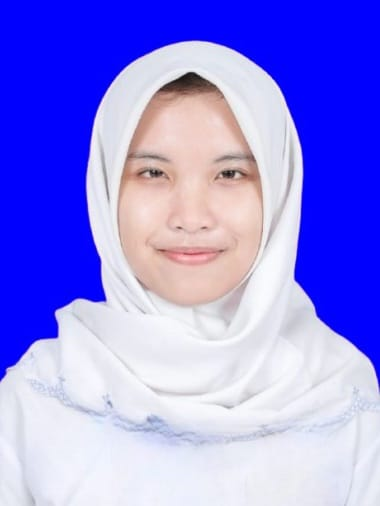

|
 |
Nama | Rakina Pandini Rifda |
| Telepon | 088212783672 | |
| rakinapandinirifda@gmail.com | ||
| Alamat | Jl. Kartini, Sumenep, Jawa Timur | |
| Deskripsi | Seorang mahasiswi berasal dari Sumenep kelahiran 2 Maret 2007 yang sedang menempuh pendidikan di Universitas Trunojoyo Madura, jurusan Sistem Informasi, Fakultas Teknik. |
Menggambar, menulis, melukis, memasak, bermain keyboard, ngoding (basic)